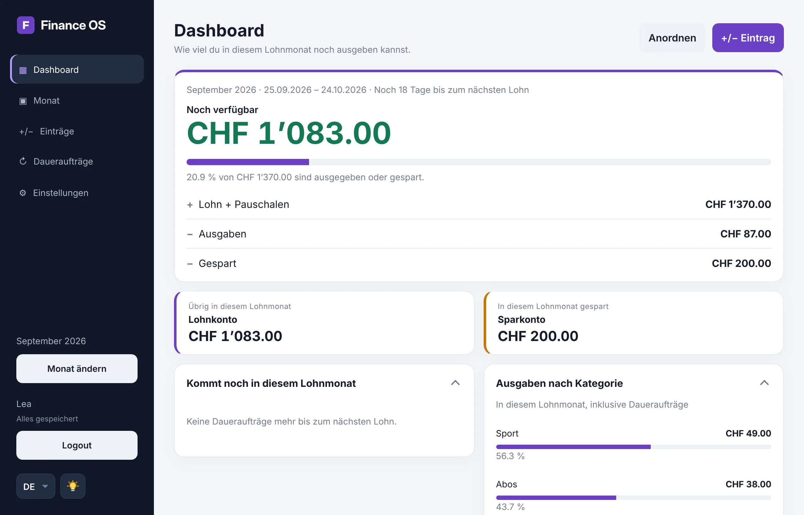

Für Lernende in der Schweiz – Übungswebsite – kein Verkauf von Produkten
Dein Lehrlingslohn, im Griff vom 25. bis zum 24.
Finance OS rechnet deinen Lohnmonat so, wie er wirklich läuft: Lohn und Pauschalen rein, Daueraufträge und Sparen raus. Du siehst jederzeit, wie viel noch verfügbar ist.
- Kostenlos und ohne Werbung
- Keine Verbindung zu deinem Bankkonto
- In zwei Minuten eingerichtet
- Lohn + Essenspauschale+ 1’250.00
- Automatisch sparen↗ 200.00
- Handy-Abo− 25.00
- Migros− 18.40
- Spotify− 12.95
- Kino mit Kollegen− 21.00
- CHF 0kostenlos, ohne Abo
- AES-256verschlüsselte Finanzdaten
- DSGnach Schweizer Datenschutzgesetz
- 0 Trackerkeine Werbung, kein Datenverkauf
Am 25. kommt der Lohn. Am 10. ist er weg?
Abos, Handy, Ausgang, Kleider: Kleine Beträge summieren sich schnell, und die Banking-App zeigt nur den Kontostand. Finance OS zeigt dir, wohin dein Geld geht – und wie viel du in deiner Lehre schon gespart hast.

Finance OS als App auf deinem Handy
Kein App Store nötig: Leg Finance OS auf deinen Home-Bildschirm. Es öffnet sich dann wie eine App – ohne Browser-Leiste und immer in der neuesten Version.
iPhone
- Finance OS in Safari öffnen
- Unten auf „Teilen“ tippen
- „Zum Home-Bildschirm“ wählen
- Oben rechts auf „Hinzufügen“ tippen
Android
- Finance OS in Chrome öffnen
- Oben rechts auf ⋮ tippen
- „App installieren“ oder „Zum Startbildschirm hinzufügen“ wählen
- Mit „Installieren“ bestätigen
Samsung Internet: ☰ → „Seite hinzufügen zu“ → „Startbildschirm“
Alles, was du für deinen Lohn brauchst
Gebaut für die Lehre – und auf deine eingestellt: 2, 3 oder 4 Lehrjahre, dein Lohntag, Pauschalen wie Essen oder ÖV und 13. Monatslohn.
-
Dashboard
Gespart, Einnahmen, Ausgaben und Sparquote auf einen Blick – auch pro Lehrjahr.
-
Monatsübersicht
Jede Buchung im Lohnmonat, neueste zuerst, mit Budget-Balken bis zum nächsten Lohn.
-
Einträge in Sekunden
Ausgabe, Einnahme oder Sparübertrag mit Kategorie und Zahlungsart: TWINT, Karte, Bar.
-
Daueraufträge
Handy-Abo, Halbtax oder Nebenjob zählen erst am Fälligkeitstag – monatlich, vierteljährlich, halbjährlich oder jährlich.
-
Automatisch sparen
Lege pro Lehrjahr fest, wie viel von Lohn und Pauschalen direkt aufs Sparkonto geht.
-
Deine Daten gehören dir
Alles jederzeit als Datei herunterladen oder das Konto löschen – bestätigt per E-Mail.
In drei Schritten startklar
-
Konto erstellen
E-Mail, Benutzername und Passwort – dann bestätigst du deine Adresse per Link.
-
Lohn und Fixkosten eintragen
Lohntag und Lohn pro Lehrjahr einmal festlegen, dazu was du sparst. Abos als Dauerauftrag.
-
Ausgaben erfassen
Finance OS rechnet den Rest und zeigt dir, wie viel bis zum nächsten Lohn bleibt.
Deine Finanzen gehen nur dich etwas an
Wir sagen dir genau, wie deine Daten geschützt sind – und was wir nicht tun: Wir zeigen keine Werbung, verkaufen keine Daten und binden keine Tracker ein.
Datenschutzerklärung lesen- Verschlüsselt gespeichertDeine Einträge liegen mit AES-256 verschlüsselt in der Datenbank.
- Passwort nie im KlartextGespeichert wird nur ein BCrypt-Hash – auch wir sehen dein Passwort nicht.
- Schutz vor Passwort-RatenNach fünf falschen Versuchen wird das Login für 15 Minuten gesperrt.
- Bestätigte E-MailKonten werden erst nach der Bestätigung per Link aktiv.
- Kein Zugriff aufs BankkontoDu trägst Beträge selbst ein. Finance OS kann kein Geld bewegen.
- Deine Rechte nach DSGDaten herunterladen oder Konto löschen – direkt in den Einstellungen.
Häufige Fragen
Was kostet Finance OS?
Nichts. Finance OS ist kostenlos, zeigt keine Werbung und verkauft keine Daten.
Ist Finance OS mit meinem Bankkonto verbunden?
Nein. Du trägst Lohn, Ausgaben und Daueraufträge selbst ein. Finance OS hat keinen Zugriff auf dein Konto und kann kein Geld bewegen.
Für wen ist Finance OS gedacht?
Für Lernende in der Schweiz: Du stellst Lohntag, Dauer der Lehre (2, 3 oder 4 Jahre), Lohn, Pauschalen und Sparbetrag pro Lehrjahr selbst ein. Es funktioniert aber für alle mit einem Monatslohn – mit Lohntag 1 einfach pro Kalendermonat.
Wer sieht meine Daten?
Nur du. Deine Finanzdaten werden verschlüsselt gespeichert, und jedes Konto sieht ausschliesslich die eigenen Einträge. Mehr dazu in der Datenschutzerklärung.
Kann ich Finance OS auf dem Handy nutzen?
Ja. Finance OS läuft im Browser und ist für Handy, Tablet und Computer gestaltet.
Gibt es Finance OS als App?
Ja, ohne App Store: Du legst Finance OS auf deinen Home-Bildschirm und öffnest es dann wie eine App. So geht's
Kann ich mein Konto wieder löschen?
Jederzeit: In den Einstellungen unter „Profil“ forderst du die Löschung an. Du bekommst eine E-Mail, und sobald du den Link darin bestätigst, wird dein Konto mit allen Daten gelöscht. Vorher kannst du alles als Datei herunterladen.
Ich habe eine Frage, die hier nicht beantwortet ist.
Schreib mir über das Kontaktformular – ich antworte dir per E-Mail.
Starte deinen ersten Lohnmonat
Kostenlos, ohne Werbung, in zwei Minuten eingerichtet.
Kostenlos Konto erstellen